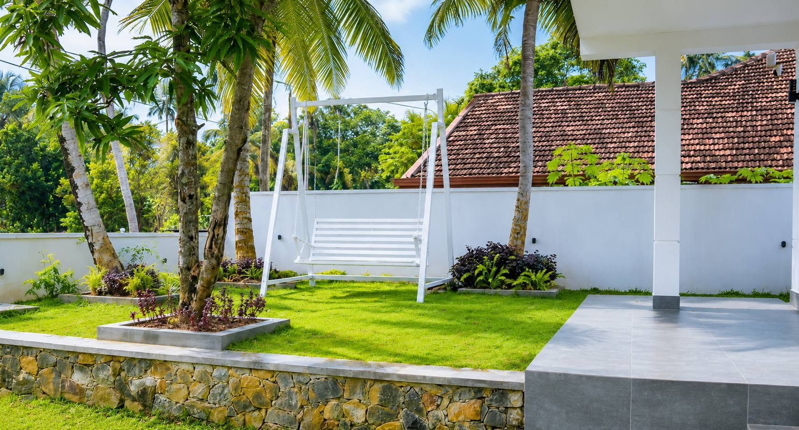
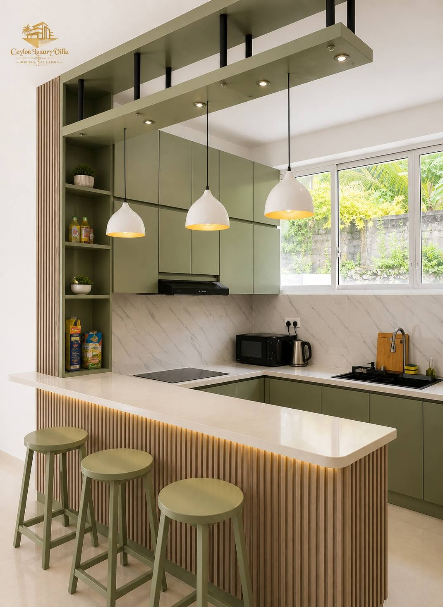

MIRISSA, SRI LANKA
A slower
kind of stay.
Palm-framed days. Beautiful little details.
Your invitation to settle into island time.

A LITTLE SPACE TO EXHALEWELCOME TO CEYLON
Some places invite you
to do a little less.
Step into the world of Ceylon Luxury Villa Mirissa. Soft natural tones, sunlit spaces and a garden touched by tropical green set the scene for your next Sri Lankan escape.
Make room for slow mornings, shared moments and time together. Explore the spaces, picture your stay, and get in touch to plan the details.

THOUGHTFUL SPACES
Natural textures.
Easy living.
Olive greens, warm wood and bright interiors echo the tropical surroundings. Discover the little details that give Ceylon its character.
Gather around
A welcoming kitchen and breakfast counter.
Take it outside
Palm trees, a garden swing and a little fresh air.
THE VILLA, IN FRAMES
Picture yourself here.
Images from our Facebook gallery.
Select a photo to explore.
YOUR NEXT CHAPTER
Shall we make it
Mirissa?
Tell us when you would like to visit. Prepare your stay enquiry, then contact the villa on Facebook for availability and rates.
Dates and prices are confirmed directly with the villa. This form prepares an enquiry; it does not make a reservation.